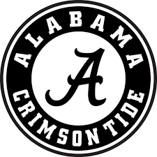

Alabama University Home of the Crimson Tide

The Cheerleading program consists of two teams: All Girl and Coed. The All Girl team cheers for Women's basketball games, Volleyball, Gymnastics, and home football games. The Coed team cheers for all home and away football games and Men's basketball. Both teams compete each year at UCA College Nationals in January. In addition to practice, the cheerleaders are required to attend weekly workouts.
Football Schedule
| Date | location | Opponent |
|---|---|---|
| Aug 31 | Atlanta, GA. | Duke |
| Sep 7 | Tuscaloosa, ALA. | New Mexico State |
| Sep 14 | Columbia, SC. | South Carolina |
| Sep 21 | Tuscaloosa, ALA. | Southern Miss |
| Sep 28 | Tuscaloosa, ALA. | Ole Miss |
| Oct 12 | College Station, Texas | Texas A&M |
| Oct 19 | Tuscaloosa, ALA. | Tennessee |
| Oct 26 | Tuscaloosa, ALA. | Arkanas |
| Nov 9 | Tuscaloosa, ALA. | LSU |
| Nov 16 | Starkville, Miss | Mississippi State |
| Nov 23 | Tuscaloosa, ALA. | Western Carolina |
| Nov 30 | Auburn, Ala. | Auburn |
Come watch us cheer on the Crimsom Tide, and watch us in the halftime show